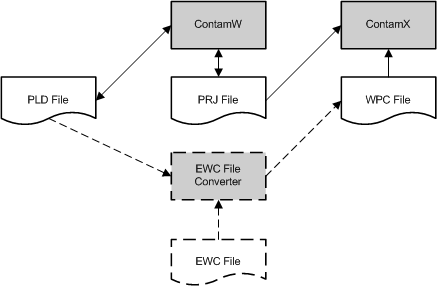

风压和污染物 (WPC) 文件可用于解释建筑围护结构上的外部风压和室外污染物浓度的变化。该方法解决了允许使用一般的、空间变化的风压和环境污染物浓度的需要，例如来自风洞实验或大气模型的那些，例如羽流或烟团扩散模拟工具。 WPC 文件提供连接到环境房间的每个流路的外部压力和/或污染物浓度时间历史记录，包括管道终端和简单空气处理系统的室外进气口。
WPC 文件是在 CONTAM 外部创建的，但是 ContamW 可以帮助创建它们，该文件可以生成路径位置数据 (PLD) 文件，列出连接到环境房间的所有气流路径的位置。下图说明了 CONTAM 和 WPC 文件之间的交互。图中的虚线表示可选组件。 WPC 文件是一个 ASCII 文件，可以使用传统方式创建，例如将电子表格转换为文本。人们还可以开发一个 WPC 文件转换器程序，以根据由单独工具（例如外部 CFD 程序）创建的外部风压和污染物数据文件来创建文件。然后，转换器可以使用 PLD 文件来创建特定于相关建筑物的 WPC 文件，即 PRJ 文件。 ContamW 提供了一种激活用户可选转换器的方法。 WPC 和 PLD 文件格式的详细信息在标题为 WPC 文件格式 , 和 PLD 文件格式 分别。 CONTAM 不包括 EWC 文件创建工具或 EWC 到 WPC 转换器工具。

图 - WPC 文件实现原理图
实施 WPC 文件的步骤：
如果使用外部编辑器，您可以使用创建 WPC 文件对话框生成路径位置数据列表，其中包含所有建筑围护结构开口的位置。您还可以让 ContamW 通过以下方式调用您的 EWC 文件转换器程序： 创建 WPC 文件 对话框将在本节后面出现并通过 W 伊瑟 →C 重新创建 WPC 文件... 菜单命令。
如果您使用外部编辑器创建了 WPC 文件，则应验证其内容是否与项目文件的内容匹配。您可以使用 View → W 工业压力模式 显示 WPC 风压类型（参见 检查风 在 定义天气和风 部分）或通过选择启动预模拟检查 Run Simulation or Create ContamX Input File 从 Simulation 菜单 任一选项都会比较 WPC 和 PLD 文件，并提供它们之间差异的通知，包括不匹配的位置数据和污染物数据。如果您使用 EWC 文件转换器程序，然后验证步骤将自动发生。如果有任何流路径未映射到 WPC 文件中的位置，它们将在 SketchPad 上突出显示，并且这些位置的列表将写入 CONTAMW3.LOG 文件。查找 WPC 文件中未找到的路径/终端/连接点列表。
如果 WPC 文件和 PLD 文件之间存在错误，则 ContamX 将无法运行模拟。 ContamW 不会启动 ContamX。如果在存在差异的项目上从命令行运行 ContamX，它也会退出并显示错误消息。